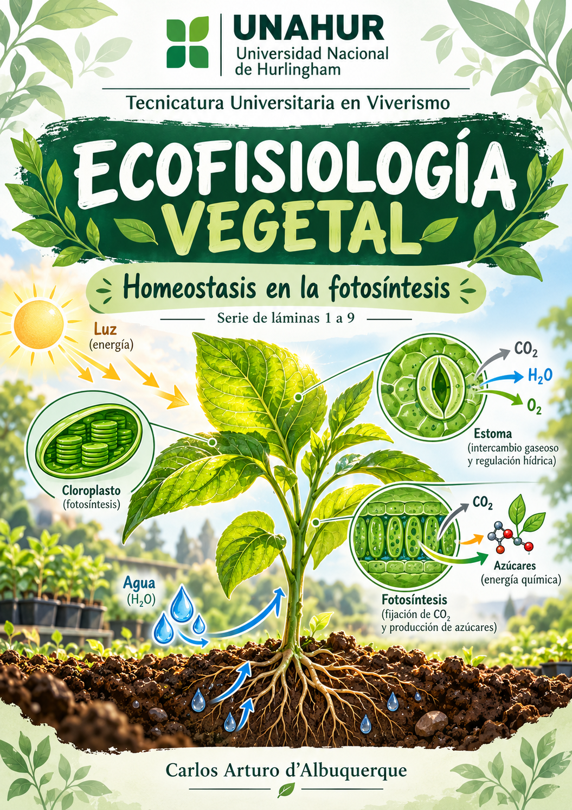

ECOFISIOLOGÍA VEGETAL · HOMEOSTASIS EN LA FOTOSÍNTESIS
La vida busca
su equilibrio. 🌿
Luz, agua y carbono: todo está conectado. Explorá cómo una planta regula su mundo interior para sostener la fotosíntesis en un ambiente cambiante.
9 láminas + portada e índice · A tu ritmo · Para estudiar juntos

01 / ENTENDER
Una planta, muchos equilibrios.
Elegí un tema. Conectá las ideas.
02 / CONECTAR LOS PROCESOS
Una puerta.
Dos intercambios.
Explorá el compromiso entre captación de CO₂ y conservación de agua.
Esquema conceptual: no predice tasas de fotosíntesis ni transpiración. También influyen gradientes de CO₂, demanda evaporativa y metabolismo.
BALANCE ENERGÉTICO
¿La energía puede usarse?
Modelo cualitativo de la lámina 006. El riesgo y la respuesta varían entre especies y condiciones.
03 / RECORDAR
Hacé florecer lo que sabés.
TARJETAS DE MEMORIA
DESAFÍO DE REPASO
04 / VOLVER A LAS FUENTES
Tu colección de láminas.
Aprender también es crecer.
Volvé a los temas, conversalos con tus amigos y repetí el desafío cuando quieras.
Volver al repaso ↑